Gruppiertes Boxdiagramm
grouped-box-plot
Zusammenfassung
In Origin kann ein gruppiertes Boxdiagramm entweder aus Index- oder aus Rohdaten erstellt werden. Die indizierten Daten werden in einer Datenspalte und einer oder mehrerer Gruppenspalten angeordnet, während Rohdaten in mehreren Datenspalten angeordnet sind und entsprechend der Spaltenbeschriftungszeile(n) gruppiert werden.
Wenn das gruppierte Boxdiagramm erstellt ist, gibt es viele verfügbaren Optionen, um die Boxdiagramme mitsamt ihrer Achsen benutzerdefiniert anzupassen. Die Optionen der benutzerdefinierten Anpassung sind für gruppierte Boxdiagramme sowohl aus Rohdaten als auch aus Indexdaten die gleichen.

Origin-Version mind. erforderlich: 2015 SR0
Was Sie lernen werden
Dieses Tutorial zeigt Ihnen, wie Sie:
- ein gruppiertes Boxdiagramm aus Indexdaten erstellen.
- ein gruppiertes Boxdiagramm aus Rohdaten erstellen,
- das Boxdiagramm mit dem Dialog Details Zeichnung benutzerdefiniert anpassen.
- die Beschriftungen der Achsenhilfsstriche im Tabellenstil benutzerdefiniert anpassen.
Schritte
Gruppiertes Boxdiagramm aus Indexdaten erstellen
- Wählen Sie im Menü Hilfe: Lernzentrum oder drücken Sie die Taste F11, um das Lernzentrum zu öffnen. Wählen Sie die Registerkarte Diagrammbeispiel und dann Boxdiagramme in der Auswahlliste "Kategorie". Klicken Sie doppelt auf das Diagrammbeispiel unten, um das Beispiel "Box Charts - Grouped Box Chart with Color Indexed Data Points" zu öffnen.
- 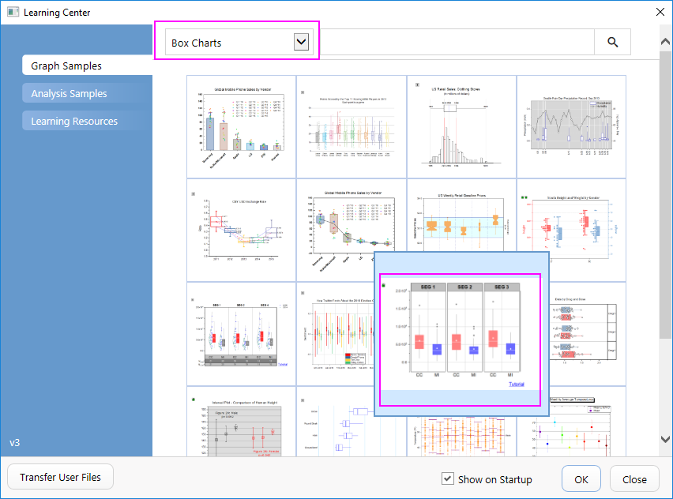
- Hinweis: Dieses Tutorial ist mit dem Ordner Grouped Box Plot and Axis Tick Table des Projekts "Tutorial Data" verbunden: <Origin-Verzeichnis>\Samples\Tutorial Data.opj.
- In der Arbeitsmappe Book10 sind die Daten im Arbeitsblatt CC.MI-Index Indexdaten. Spalte E ist die Datenspalte, und die Spalten C und D können als Gruppierungsspalten verwendet werden. Markieren Sie Spalte E und wählen Sie Zeichnen: Kategorial: Gruppierte Boxdiagramme, Index, um den Dialog plot_gboxindexed zu öffnen.
- Klicken Sie in diesem Dialog auf die dreieckige Schaltfläche oberhalb des Feldes Gruppenspalte(n) und wählen Sie Spalten C und D aus.
- 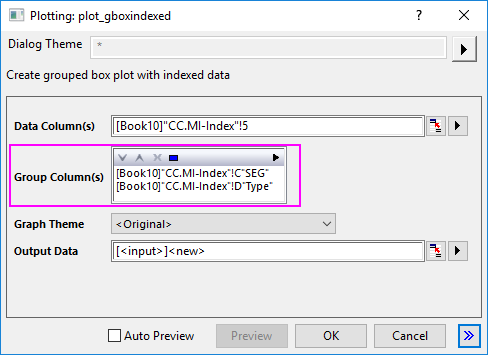
- Klicken Sie auf OK, um ein gruppiertes Boxdiagramm zu erstellen. Das Diagramm sollte dem Bild unten entsprechen. Es wird auch ein neues Ausgabeblatt zur Arbeitsmappe hinzugefügt.
- 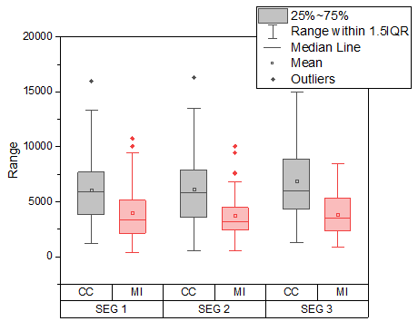
 |
Ein weiteres kurzes Tutorial zum Erstellen von gruppierten Boxdiagrammen aus Indexdaten finden Sie unter Beispiel 2.
|
Benutzerdefinierte Anpassung mit dem Dialog Details Zeichnung
- Aktivieren Sie das Diagrammfenster, das Sie aus den indizierten Daten erstellt haben. Markieren und löschen Sie das Legendenobjekt.
- Wählen Sie Format: Zeichnung, um den Dialog Details Zeichnung zu öffnen. Um den Symbolstil benutzerdefiniert anzupassen, nehmen Sie auf der Registerkarte Ausreißer folgende Einstellungen vor:
- 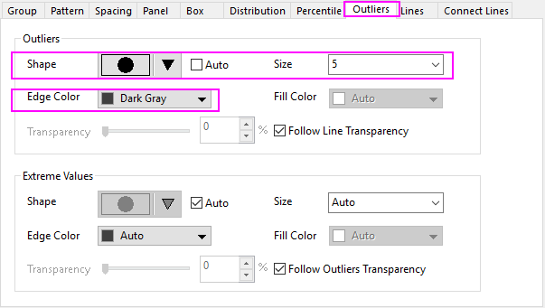
- Setzen Sie auf der Registerkarte Abstände die Option Abstand zwischen Untergruppierungen (in %) auf 5. Ändern Sie auf der Registerkarte Linien die Einstellung der Linienfarbe folgendermaßen.
- 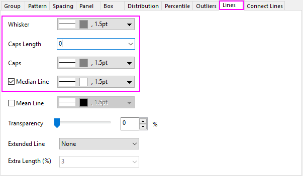
- Um auf der Registerkarte Prozentangaben den Typ von Max/99%/1%/Min auf Kein zu setzen, wählen Sie die letzte Option in der Abbildung der Symbole. Die verbleibenden Einstellungen werden folgendermaßen festgelegt:
- 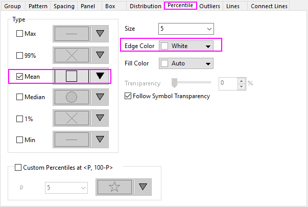
- Setzen Sie auf der Registerkarte Gruppe für die Zeile Randfarbe das Inkrement auf Durch Eins und die Untergruppe auf Innerhalb der Untergruppe.
- Klicken Sie als Nächstes auf die Schaltfläche ... rechts von der Spalte Details, um den Inkrementeditor zu öffnen. Klicken Sie auf die erste Farbe, um die Farbauswahl zu erweitern. Klicken Sie auf die leere Farbe unter Benutzerdefiniert, um den Dialog Farben zu öffnen. Sie können im aufgerufenen Dialog eine benutzerdefinierte Farbe definieren, indem Sie die HSL-Werte eingeben (Farbton = 0, Sättigung = 240, Leuchtdichte = 180). Klicken Sie auf OK, um den Dialog zu schließen. Befolgen Sie die gleiche Vorgehensweise für die zweite Farbe im Dialog Inkrementeditor mit den Einstellungen Farbton = 160, Sättigung = 240, Leuchtdichte = 164. Klicken Sie auf OK, um den Inkrementeditor zu schließen:
- 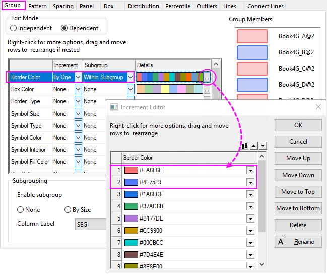
- Wählen Sie für die Boxfarbe die ersten zwei Farben der aktuellen Farbliste für diejenigen, die Sie im vorherigen Schritt definiert haben, und wählen Sie dann die Option Durch Eins für Inkrement und Innerhalb der Untergruppe für die Untergruppe:
- 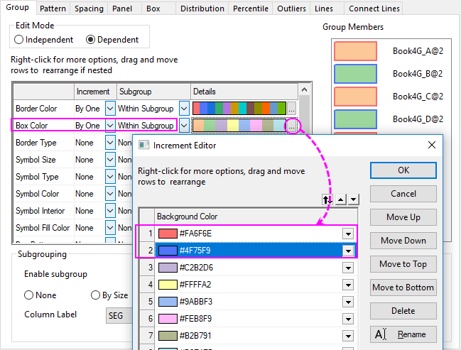
- Klicken Sie auf OK, um all diese Einstellungen anzuwenden und den Dialog Details Zeichnung zu schließen. Klicken Sie auf eine Box und in der zugehörigen Minisymbolleiste auf die Schaltfläche Kleinerer Abstand und das dreimal, um den Abstand zwischen den Teilgruppen zu verringern.
- 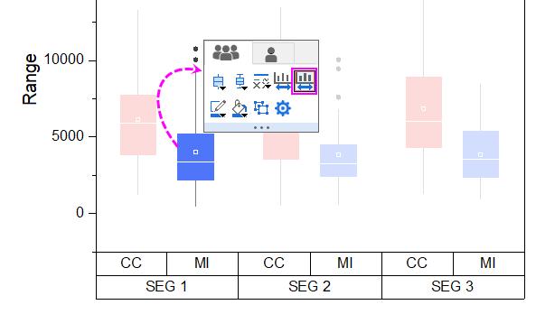
- Am Ende sollte das Diagramm dem Bild unten entsprechen.
- 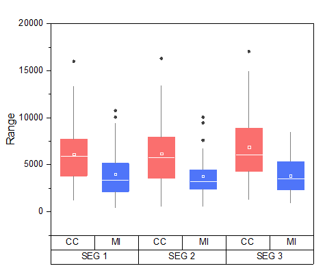
Benutzerdefinierte Anpassung mit dem Dialog Achsen
Verwenden Sie weiterhin das Diagramm aus dem vorgehenden Abschnitt.
- Klicken Sie in der Minisymbolleiste auf die untere Tabellenzeile der X-Achse und dann auf die Schaltfläche Auf die gegenüberliegende Seite verschieben, um sie zur oberen Achse zu verschieben.
- 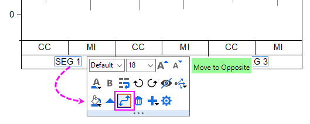
- Klicken Sie auf die Hilfsstrichsbeschriftungen der unteren Tabellenzeile, um die Schriftgröße auf 22 zu setzen. Klicken Sie auf die Hilfsstrichsbeschriftungen der oberen Achse, um die Schriftgröße mittels der Minisymbolleiste in 24 zu ändern.
- 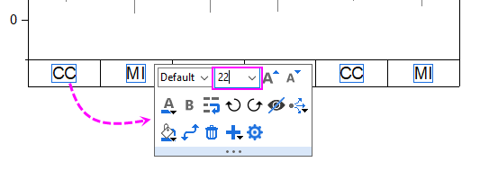
- Klicken Sie doppelt auf die untere Achse, um den Dialog Achsen zu öffnen. Gehen Sie bei im linken Bedienfeld ausgewähltem Symbol Unten 1 zur Unterregisterkarte Tabelle auf der Registerkarte Hilfsstrichsbeschriftungen und legen Sie das Tabellenformat, wie unten zu sehen, fest:
- 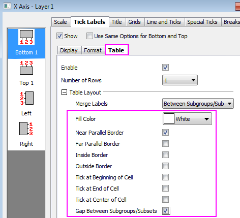
- Wählen Sie im linken Bedienfeld Oben 1 und gehen Sie zur Unterregisterkarte Tabelle auf der Registerkarte Hilfsstrichsbeschriftungen, um das Tabellenformat folgendermaßen festzulegen:
- 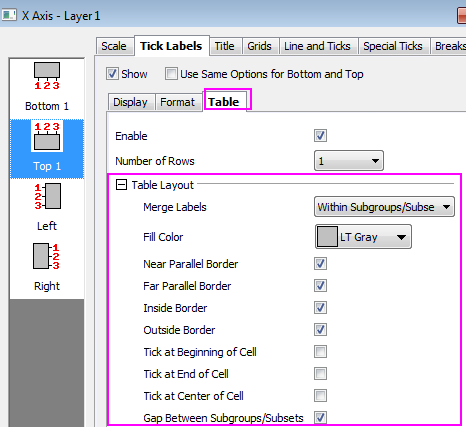
- Klicken Sie auf das Symbol Links (für die Y-Achse) und ändern Sie das Anzeigeformat für die Hilfsstrichsbeschriftungen der Y-Achse:
- 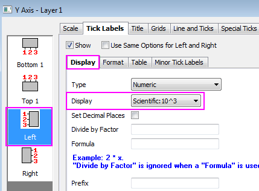
- Klicken Sie auf die Schaltfläche Anwenden. Um die Haupt- und Nebengitternetzlinien einzublenden, gehen Sie zur Registerkarte Gitternetze und nehmen Sie folgende Einstellungen jeweils für die Gitternetze von X (Vertikal) und Y (Horizontal) vor:
- 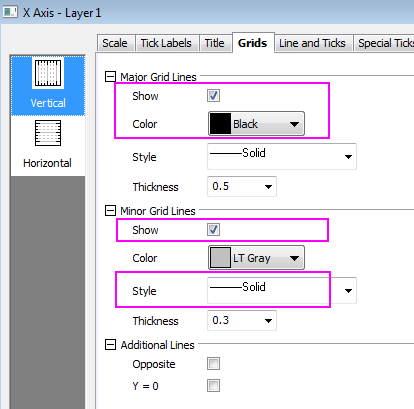
- 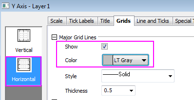
- Klicken Sie auf OK, um diese Einstellungen anzuwenden und den Dialog Achsen zu schließen. Das Diagramm sollte am Ende folgendermaßen aussehen:
|
Sie können auf die Tabellenbeschriftungen klicken, um sie auszuwählen, und sie mit Hilfe der Pfeiltasten auf Ihrer Tastatur verschieben.
|